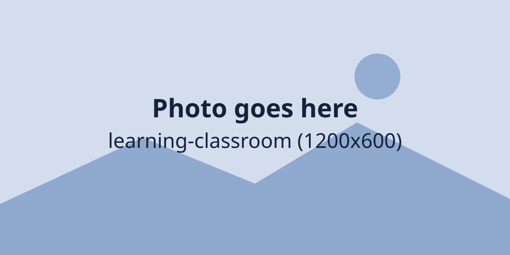

Choose your level

How your studies grow
Most students follow this path. Some move faster, some need longer, and we support each one.
Build the basics
S.1 and S.2 strengthen English, mathematics and science, and teach students how to study.
Widen and deepen
In S.3 students go further in each subject and choose the ones that suit their strengths.
Prepare for UCE
S.4 brings mock exams, revision clinics and past-paper practice before the national exams.
Specialise for UACE
In S.5 and S.6 students focus on their subject combination, General Paper and university plans.
A typical week
Hours of lessons per week for S.1 to S.4. S.5 and S.6 students spend more time on their chosen subjects.
| Subject | Hours | What it looks like |
|---|---|---|
| English | 4 | Reading, writing, grammar and speaking |
| Mathematics | 5 | Algebra, geometry, statistics and problem solving |
| Biology | 3 | Living things, with practicals in the lab |
| Chemistry | 3 | Matter, reactions and lab safety |
| Physics | 3 | Forces, energy, electricity and experiments |
| History and Geography | 4 | Uganda, Africa and the wider world |
| Religious Education | 1.5 | Values, ethics and faith traditions |
| Entrepreneurship | 1.5 | Business skills and real projects |
| Computer Studies | 2 | ICT in the computer lab, typing and coding |
| Languages | 1.5 | Luganda, Kiswahili and French |
| PE and games | 2 | Sport, fitness and teamwork |
| Library and private reading | 1 | Reading, research and quiet study |
What we teach
- English Language
- Literature in English
- Mathematics
- Biology
- Chemistry
- Physics
- History
- Geography
- Religious Education
- Entrepreneurship
- Computer Studies
- Agriculture
- Luganda
- Kiswahili
- Fine Art
- Physical Education
- General Paper
- Subsidiary ICT
No subject matches that search. Try a shorter word.
Support for every learner
Some students need a little extra help, and some need extra challenge. Our teachers and guidance team plan for both, in class and after lessons.
- Remedial lessons and study groups for students who need extra help
- Guidance and counselling for study, friendships and wellbeing
- Career guidance and help with university applications
- Extension work and competitions for students who race ahead
How we share progress
Every day
Teachers mark work, give feedback and note what to improve.
Every term
A report card, a parent-teacher day and targets for the next term.
Once a year
A full-year report. S.4 and S.6 also sit mock exams and a careers day.
Boarders have supervised evening prep. Day scholars get a small amount of homework each night.